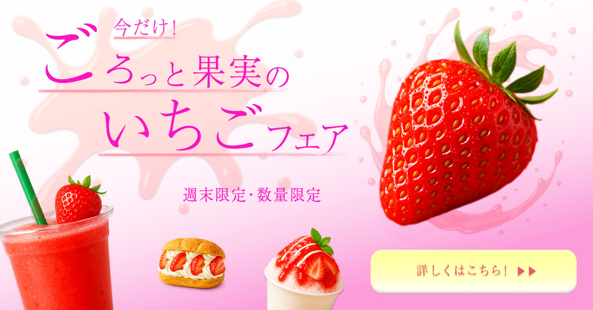
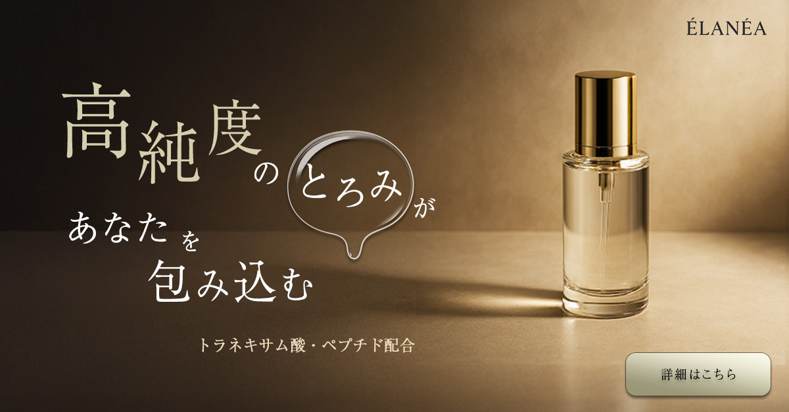
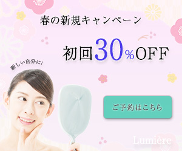

作品一覧
これまでに制作したデザインや学習成果を紹介しています。

イチゴフェアバナー
「いちごフェア」用の告知バナーです。 背景は淡いピンクのグラデーション、軽い水しぶきの模様でやわらかい雰囲気に。 いちごのごろっとした感じとさわやかさを表しながらも読みやすさを重視。 右下のCTAに視線が流れるレイアウトにしています。

高級化粧品バナー
本バナーでは、高級スキンケアを求める大人の女性に向けて、 成分の純度と濃度の高さを強く訴求することを意図しました。 余白を広く取り、情報量を最小限に抑えることで、商品そのものの品質に自信があるブランド姿勢を表現しています。 背景や色味は白とゴールドを基調に統一し、上質さと透明感を両立。 フォントは細身で洗練された書体を採用し、静かなラグジュアリー感を演出しました。 全体として、視線が自然と商品へ集まるよう構図を設計し、信頼性と高級感が直感的に伝わるデザインを目指しています。

美容系バナー
春の新規キャンペーンとして、初めて来店するお客様が「新しい自分に出会える」という前向きな気持ちを抱けるよう、柔らかく華やかな世界観を意識してデザインしました。 背景には春らしい淡いピンクと花のモチーフを用い、季節感と軽やかさを演出。 女性が鏡を見る姿を配置することで、ビフォーアフターを想起させ、サービスへの期待感を高めています。 文字情報はメリハリをつけて整理し、割引率とCTAが自然に目に入るよう視線誘導を設計。 全体として、親しみやすさと上品さを両立させたキャンペーンバナーを目指しました。